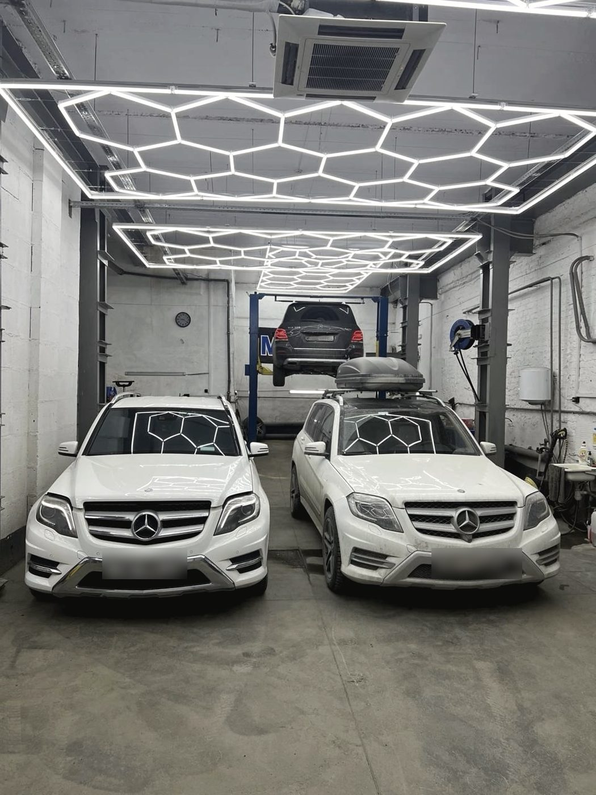
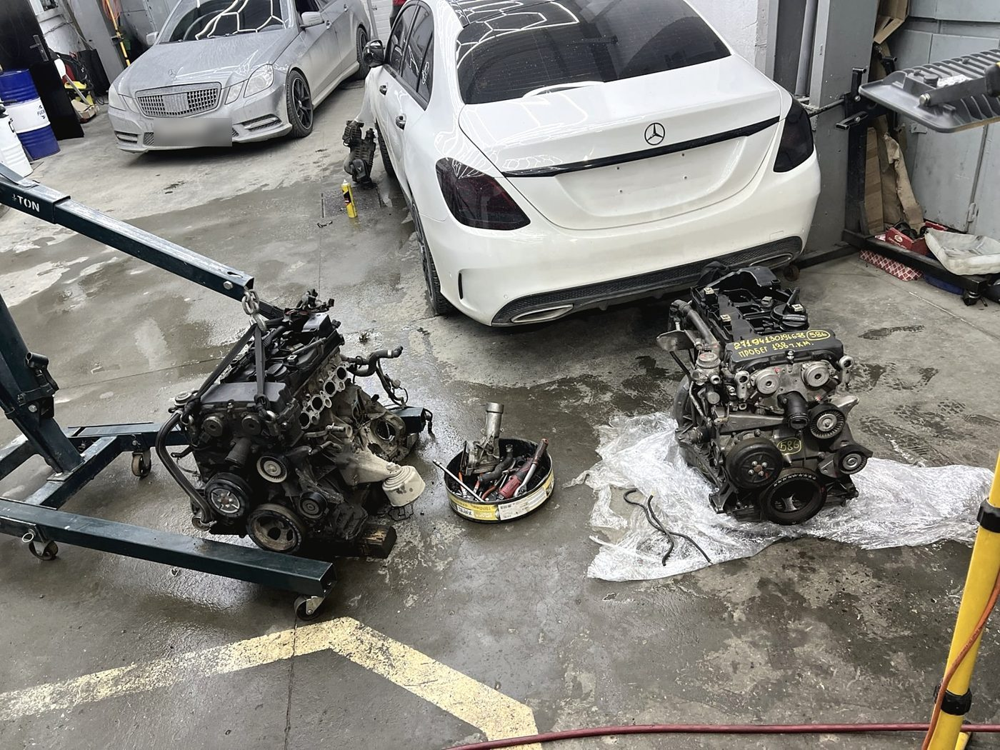
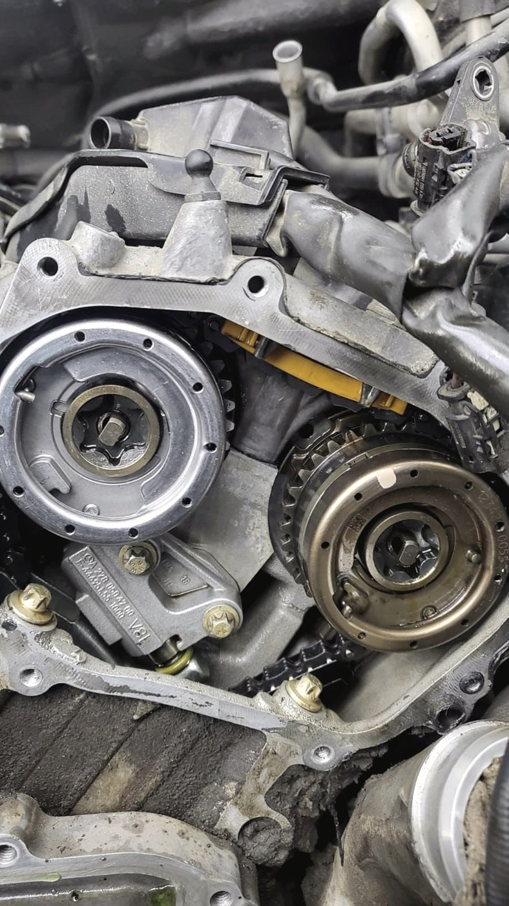
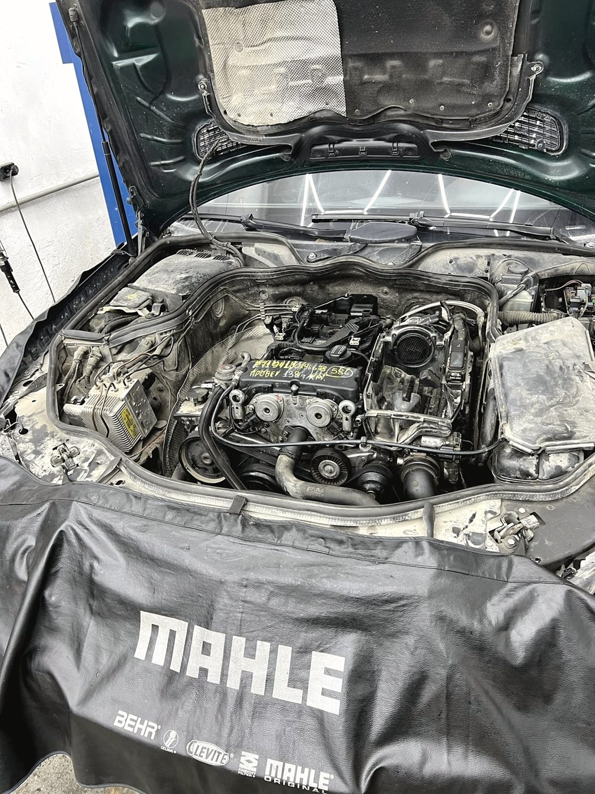
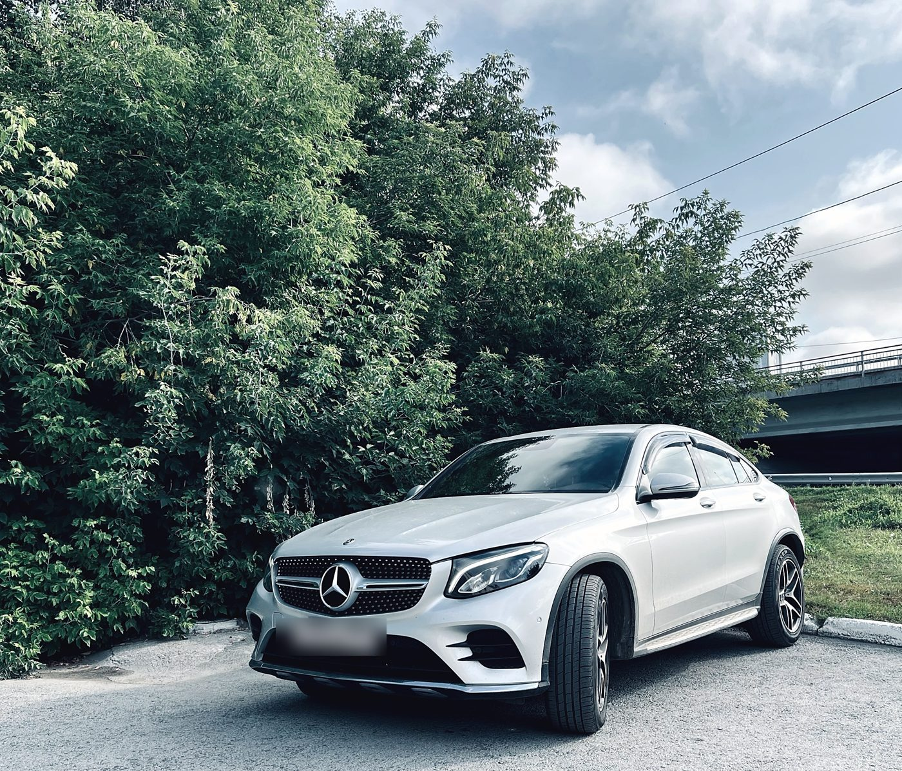

Звоним до, а не после
Как только становится ясно, что смета меняется, мы останавливаемся и звоним. Решение — за вами: делаем сейчас, откладываем или обходимся вариантом подешевле.
Обслуживание и ремонт Mercedes-Benz · Большевистская, 125/6 · Октябрьский район
Мы занимаемся одной маркой. У нас есть Xentry, своя база расходников и запчастей, и мы выдаём заказ-наряд на каждую работу. Всё остальное — как у частного мастера: вас примут по записи, объяснят каждый шаг и покажут, куда уходит каждая копейка.

Что это значит на практике
Работы
Замена всех технических жидкостей, свечей, фильтров, диагностика по кругу. Машину из Японии или из Европы принимаем целиком, а не по одной жалобе.
Ремонт бензиновых двигателей, течи и уплотнения, система охлаждения, замена силового агрегата, когда ремонт уже дороже.
Ремонт электронных систем, плата управления автоматической коробкой. Плату заказываем и ставим — обычно вопрос закрывается за три дня.
Стойки, рычаги, сайлентблоки, ремонт пневмоподвески — узел, на котором многие сервисы останавливаются.
Ремонт и замена рулевых реек. Отдельная позиция в прайсе, а не «отправим к знакомым».
Обслуживание климатических систем: заправка кондиционера, поиск утечек, ремонт узлов отопителя.
Бывает, что можно обойтись малой кровью вместо замены узла за сотни тысяч. Мы такие варианты ищем и предлагаем.
Кузовные работы по Mercedes — от локального ремонта до восстановления после неприятностей на дороге.
Утром увидели лужу антифриза — звоните. Такие вещи стараемся принимать в тот же день и закрывать за пару часов.


Честно
«В целом всё хорошо, но обговорённая цена может увеличиться после ремонта»
Дмитрий Д. · отзыв в 2ГИС на четыре звезды, 22 января 2026
Это справедливо, и мы ответили ему тем же, чем отвечаем здесь: в процессе ремонта вскрываются скрытые дефекты, а иногда требуется дополнительная работа. Из-за этого стоимость может вырасти. Вот что мы делаем, чтобы это не было для вас сюрпризом.
Как только становится ясно, что смета меняется, мы останавливаемся и звоним. Решение — за вами: делаем сейчас, откладываем или обходимся вариантом подешевле.
В заказ-наряде видно, что было обязательным, а что мы предложили. Если вторая часть вам не нужна — она просто не делается, и это нормально.
Отзывы · 4,9 из 5 по 72 оценкам в 2ГИС
«Объясняют каждый шаг и куда будет потрачена каждая копейка»
Дмитрий Табала · отзыв в 2ГИС · 27 марта 2026
Начал искать, где комплексно обслужить CLA180 из Японии: полная замена всех технических жидкостей, свечей, диагностика всего и прочие работы. Вошли в положение и приняли чуть позже назначенного времени. Провели все виды работ, дали заказ-наряд. Приятное общение, внутри чисто. Цена-качество — 1000 %.
Павел Хромов · 7 июля 2026
Если вы впервые столкнулись с данной маркой авто и многие вопросы для вас становятся тайной, а поломки вызывают страх, то эти ребята однозначно помогут вам со всем разобраться и выдохнуть с облегчением после заветного звонка.
Дмитрий Табала · 27 марта 2026
Цены адекватные, хорошо разбираются в тонкостях и особенностях марки. Замена фильтров и масла заняла меньше часа. Есть Xentry. Подсказали, где лучше сделать работы не их профиля. Есть своя база расходников и запчастей.
Отзыв в 2ГИС · 7 мая 2026
Благодарю данный сервис за оперативность в выполнении работ по замене муфт. Оказывается, можно обойтись малой кровью, а не в 400К. Ребята очень грамотно, доходчиво и без воды объясняют суть и предлагают варианты решения.
Алина Щепилова · 29 апреля 2026


Контакты